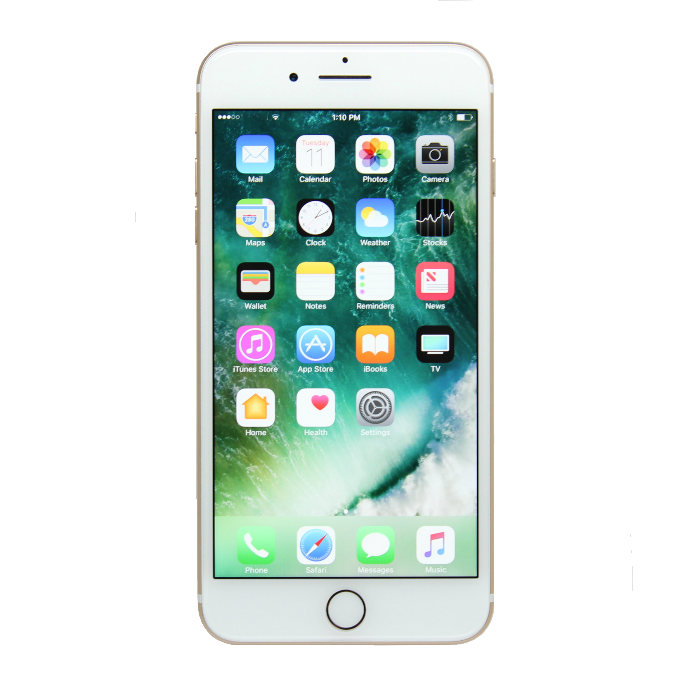
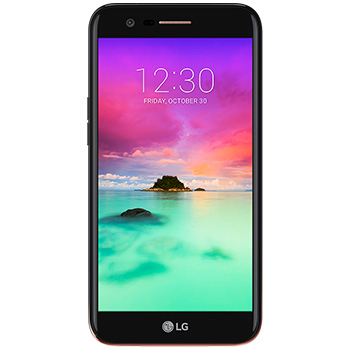

스마트폰
스마트폰은 컴퓨터를 결합한 어쩌고 저쩌고 설명설명 운영체제가 어쩌고 모바일이 어쩌고 오디오 비디오가 어쩌고 기능이 어쩌고 저쩌고
목차
역사
안드로이드
아이폰
샘플
역사
최소의 스마트폰은 사이먼으로 IBM 1992
안드로이드
안드로이드 휴대전화 어쩌고 저쩌고 인터페이스가 어쩌고 응용프로그램이 어쩌고 메시지서비스가 어쩌고
아이폰
아이폰 2007.01.09 애플이 발표한
샘플
스마트폰샘플

